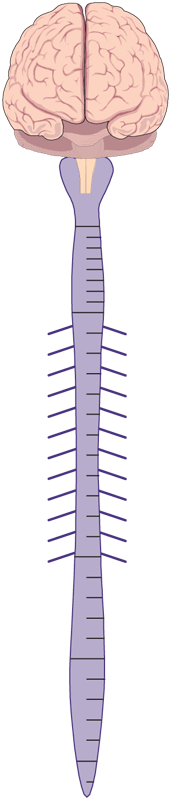
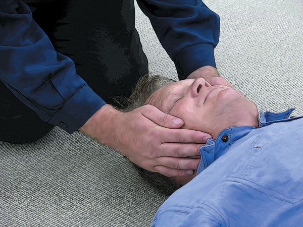
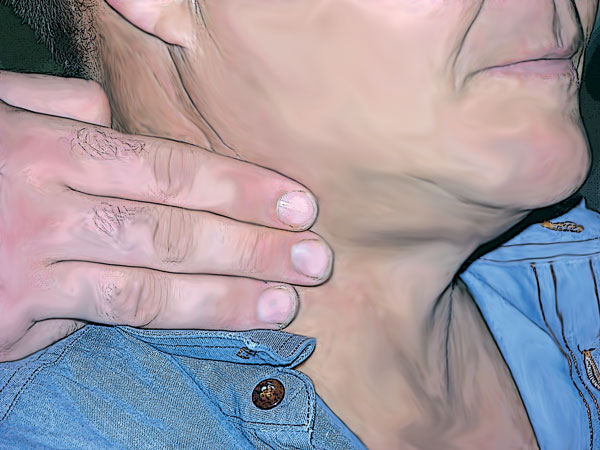
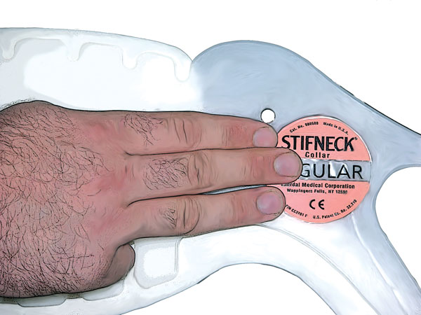

Spinal Injuries
Spinal Injuries
The spinal column consists of a series of interconnected bones, called vertebrae, which enclose the spinal cord, an integral part of the central nervous system. It is the spinal cord and its attached nerves which provides the means by which we breathe, move and use our senses.
Between each vertebra are discs of cartilage that act as shock absorbers and allow the spinal column a degree of flexibility. The spine is divided into five areas:
 The cervical spine (neck), 7 vertebrae
The cervical spine (neck), 7 vertebrae
 The thoracic spine (chest), 12 vertebrae
The thoracic spine (chest), 12 vertebrae
 The lumbar spine (back), 5 vertebrae
The lumbar spine (back), 5 vertebrae
 Fused vertebrae of the sacrum
Fused vertebrae of the sacrum
 A small vertebra called the coccyx
A small vertebra called the coccyx
Any injury to the spinal cord has serious ramifications for our ability to function normally, and an injury, or 'lesion', of the cord may cause quadriplegia (complete or partial paralysis of all four limbs); paraplegia (complete or partial paralysis of the lower limbs only); loss of: skin sensation, bowel, bladder and/or sexual function as well as chronic painful conditions, depending on the the injury along the spinal cord.
The nearer the head the lesion occurs, the more serious it is, affecting all levels of the body below it and potentially causing death if the nerves to the heart and lungs are involved.
Even if the casualty is not affected to these degrees of severity, spinal injury may cause chronic back pain and restricted spinal flexibility.
Spinal injuries can be caused by a variety of physical incidents. A common cause of spinal injuries is motorcycle accidents. Riders and pillion passengers are thrown unprotected to the roadway and invariably land heavily in an awkward manner, putting stress on the spinal column. Carefully assessing the history of the incident and the mechanism of injury will benefit the first aid provider before they apply active treatment. Road traffic accidents, diving accidents and sporting accidents provide the majority of spinal casualties.

All head injured and unconscious patients potentially have spinal injuries as well

Signs and Symptoms
 history of the trauma, especially high speed accidents or contact sports
history of the trauma, especially high speed accidents or contact sports
 pulse may be fast or slow and is not generally a helpful indication of presence or severity of a spinal injury
pulse may be fast or slow and is not generally a helpful indication of presence or severity of a spinal injury
 unnatural posture
unnatural posture
 may have pale, cool, clammy skin
may have pale, cool, clammy skin
 'tingling', unusual, or absent feeling in limbs
'tingling', unusual, or absent feeling in limbs
 absence of pain in limbs despite other injuries to these areas
absence of pain in limbs despite other injuries to these areas
 inability to move arms and/or legs, or weakness of movement
inability to move arms and/or legs, or weakness of movement
 onset of shock
onset of shock
 uncontrolled penile erection ("priapism") occasionally occurs
uncontrolled penile erection ("priapism") occasionally occurs

Care and Treatment
 If airway is not open, use jaw thrust or manual opening of the jaw rather than extending the neck
If airway is not open, use jaw thrust or manual opening of the jaw rather than extending the neck
 if unable to control airway – carefully remove the helmet while ensuring the minimum of neck movement
if unable to control airway – carefully remove the helmet while ensuring the minimum of neck movement
 call Triple Zero (000) for an ambulance
call Triple Zero (000) for an ambulance
 extreme care in initial examination
extreme care in initial examination
 always maintain the casualty's head in line with the shoulders and spine using manual support. Ensure the head is supported, not pulled or pushed in any direction
always maintain the casualty's head in line with the shoulders and spine using manual support. Ensure the head is supported, not pulled or pushed in any direction
 if trained to, apply cervical collar
if trained to, apply cervical collar
 position on spinal stretcher and use head-immobilisation device if trained to do so and equipment available
position on spinal stretcher and use head-immobilisation device if trained to do so and equipment available
 treat for shock
treat for shock
 treat any other injuries
treat any other injuries
 maintain body heat
maintain body heat
 if movement required, 'log roll' using 2-3 assistants
if movement required, 'log roll' using 2-3 assistants

Spinal shock
Spinal shock refers to changes in blood pressure associated with injury to the spine. The blood pressure is usually lower than normal (as in shock due to blood loss), however, the pulse is usually normal or slow (the opposite of shock due to blood loss). The skin may be cold and clammy as a result.
Helmet removal
Helmets should only be removed if you intend to perform CPR or if the helmet is impeding proper airway management. Otherwise, leave helmet removal to the experts. The helmet could be helping prevent (further) spinal or head injuries.
Immobilise the casualty's head and spine by having one person place their hands on either side of the casualty's head (palms inwards) to keep it from moving. If you can, immobilise the neck and/or spine by placing rolled towels, articles of clothing, etc. on both sides of the neck and/or body, but don't interfere with the casualty's airway or breathing.
Cervical collar
A cervical collar helps immobilise the neck where cervical injury is suspected. First aiders trained in their use should apply a cervical collar, though it requires two people to apply correctly.
 the first rescuer applies manual support to the head and neck
the first rescuer applies manual support to the head and neck
 if the collar is adjustable, or several sizes are available, measure the correct size according to the manufacturer's instructions
if the collar is adjustable, or several sizes are available, measure the correct size according to the manufacturer's instructions
 the second rescuer slides the front of the collar along the casualty's chest and positions the chin piece
the second rescuer slides the front of the collar along the casualty's chest and positions the chin piece
 the second rescuer gently wraps the ends of the collar snugly around the casualty's neck
the second rescuer gently wraps the ends of the collar snugly around the casualty's neck
 the second rescuer secures the collar with the Velcro tab
the second rescuer secures the collar with the Velcro tab
 ensure collar is firm and comfortable, adjust if necessary
ensure collar is firm and comfortable, adjust if necessary
 maintain support to the head and neck during all adjustments
maintain support to the head and neck during all adjustments


Measuring for the Correct Fit of a Cervical Collar